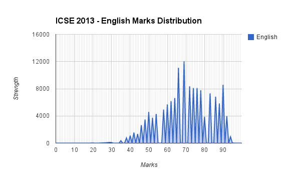
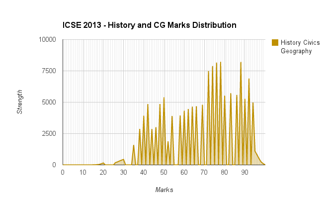
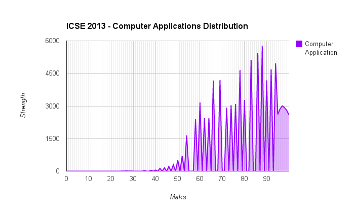
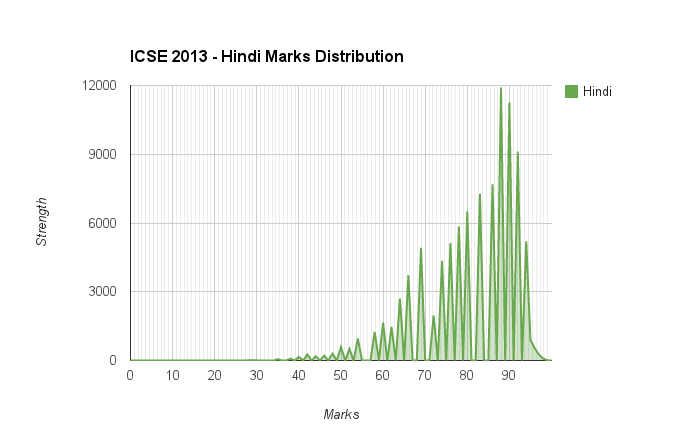
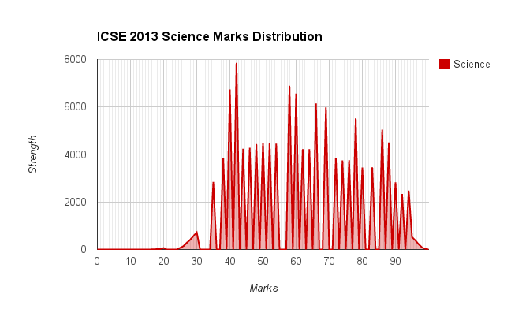
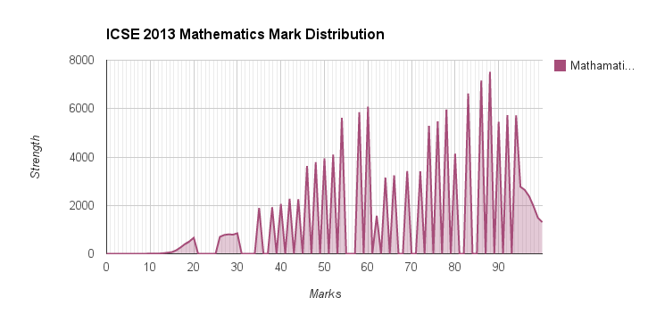
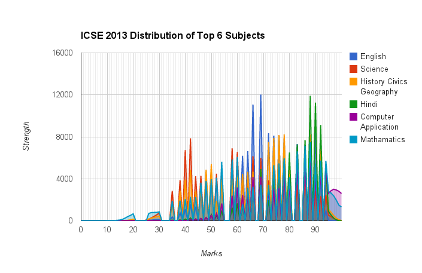
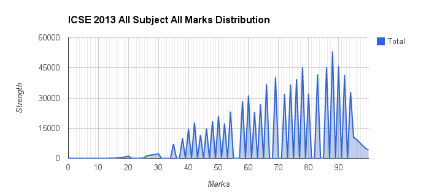
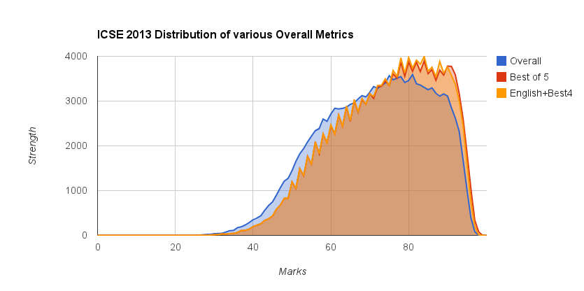
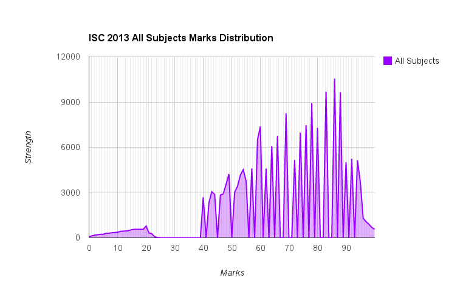

Hacking into the Indian Education System
Orignally published on Quora, where it has 715k views and 9.7k upvotes.
In the last several weeks, in a time wedged awkwardly between the end of my college finals and my summer internship, I've been exposed to some information that left me quite flabbergasted. It started about a month ago. It was a very important day in the lives of two of my juniors and close friends, Sumit Shyamsukha and Ronak Shah. It was the day their board examination marks, the ICSE and the ISC respectively, were to be released. To put this in context to our non-Indian readers, the ICSE is a 10th grade national examination and the ISC is its 12th grade counterpart. I am not aware of the exact numbers, but I believe the board who holds these examinations, ambiguously named CISCE, is the second most popular board of education in India, after the CBSE. Around 150,000 students take the ICSE and around 65,000 take the ISC from in and around India.
Wrought with the monumental anxiety that usually surrounds such a crucial result, Sumit had asked me whether I might be able to break into their system before D-day and quell his curiosity. I knew it was a long shot. On one hand, I wanted to impress someone who looks up to me and on the other, I thought "break into the ICSE? This isn't Hollywood - you can't just hack into everything, kiddo". Putting the pessimism past me, I decided to take a look.
Technicality Alert. The portions below are for an audience interested in the technical aspect of things. I will try my level best to simplify things, but in case I fail, feel free to skip the past the demarcated [technical] tag.
[Technical]
Handed just a URL and a task, I was unsure of how to proceed past a mostly blank screen with two text-boxes in the center. One textbox was for School Code and the other was for the student ID. I typed in Sumit's ID hoping for a result. Not surprisingly, this got me nowhere. The results weren't out yet, and probably not uploaded. This wasn't going to be easy.
I tried again, a little while after the results were released. At least I could salvage some of my respect and maybe scrape some results, I thought. I investigated further. Viewing the source of the invalid page revealed some very poorly written and badly styled javascript. The javascript wasn't separated away from the HTML into its own JS file (as is usually done). Neither was it minified. It was some sloppy web-work. There were several points of interest in the code.
The page source did not contain the HTML for a particular student's results but had one layer of additional security - it fetched them via javascript. However, to my surprise, it didn't fetch them from a database or anything server-side - it merely fetched them from another un-indexed (aka invisible to search engines) URL. Here's the code that they used:
1
2
3
4
5
6
7
8
9
10
11
function changeIframe() {
// Retrieve 2 parameters from the URL
var indexno2 = getQuerystring('indexno2');
var indexno4 = getQuerystring('indexno4');
// Concatenate the parameter Strings
var rollno = indexno2 + indexno4;
// Fetch the results from a link to an html file named with the String
// of the concatenated parameters
$("#result").html('<img src=\'http://drop.ndtv.com/ndtv/common/onemin/icse/loading.gif\' />');
makePOSTRequest("web/10th/10-1/"+rollno+".html",rollno);
}
I added the inline comments to explain the code. I was taken aback a little by this discovery. Besides a wafer thin layer of hiding the content from the HTML page, all they did was fetch it from another un-encrypted HTML page.
The function makePostRequest was pretty self explanatory but I had to read its implementation to be sure.
1
2
3
4
5
6
7
8
9
10
11
12
13
14
15
16
function makePOSTRequest(url, parameters) {
// Constructing an AJAX request
$.ajax(
{
data: parameters, //Data sent in the request
error: function(request,status,error) { //In case of error execute this
failoverPOSTRequest_2(
"web/10th/10-2/"+parameters+".html",parameters);
},
success: function(data,status,request) { // In case of success, display
$("#result").html(data);
},
url: url,
type: 'POST'
});
}
Essentially, it did exactly what I thought - it went to another URL to fetch a students results - a URL to <students school code><students individual code>.html.Yes. That simple. In case it failed, it would call failoverPOSTRequest_2 which would make the request to a different server - the 2nd one. This chain continued on to about 4 servers.
[/Technical]
Acquiring the results of ICSE and ISC candidates looked extremely straightforward because the results page had no proper security mechanism whatsoever. Let me break down what the format of an ICSE or ISC roll number looks like:
ICSE: T/[4 digit school ID]/[3 digit student ID]
ISC: B/[4 digit school ID]/[3 digit student ID]
The school ID and the student ID are in linear order. There were several slight intricacies - school IDs for the same school were different for the different examinations. Eventually, it seemed like ICSE school IDs ranged from 4001 to 5568 and ISC school IDs ranged from 9001 to 9793. Student IDs always started at 001 and continued incrementally until the last student of that school. My task was merely to write a program which found these ranges and retrieved and stored all the results on my computer.
[Technical]
Technically put, I merely needed to write a script to iterate through the various school IDs, check the different servers, and start with a student ID of 1 yet have a way to detect when there were no more students for a given school. I had to retrieve the resultant html files and parse them to extract all the useful information - Name, Date of Birth, ID, School, Marks.
This was all pretty simple. I initially wrote a prototype of the result fetcher which worked on hardcoded inputs and fetched one school at a time. You had to provide Student ID ranges, the school ID as well as the server number you wanted to query. This method was obviously stupid, but aha! I was fetching some valuable data!
Gradually, I built on the automation, until the only thing I had to supply was a range of school IDs and it would fetch data from all students from all those schools from any matching server they found and neatly store the results in a comma separated value (csv) file.
Because I was unaware of the school ID range at first, I simulated a simple Map-Reduce model and split the work amongst a bunch of my college's machines. With a few keyboard presses and several instances of these on several remote machines, before I knew it, I was mining data at incredible speeds!
[/Technical]
Several hours later, I had all the ISC and ICSE results on my very own computer, in a bunch of comma-separated value files. It was truly incredible. 26 megabytes of pure, magnificent data. An Excel file I couldn't scroll to the bottom of. Just for kicks, I Ctrl+F'd a few names I knew and what do you know? There they were. Line after line of names, subjects and numbers. It was truly mesmerizing.
Take some time out and imbibe the significance of what just happened. One person had just acquired the exam results for the whole country. Not only was this a violation of any and all forms of privacy associated with something as personal as your examination marks, but a mass divulsion of all sorts of personal information - names, date of birth and school. This was a privacy breach of the highest order - a technological blitzkrieg. When 114,000 Apple IDs were compromised (AT&T Web site exposes data of 114,000 iPad users), it was a huge deal. This is information of around 200,000 people we're dealing with. This is my first motive behind writing this article - to demonstrate the vulnerability of information on the web in India. To demonstrate how few measures our education board takes to hide such sensitive information. Even without any such fancy programming, anybody can easily peek a glance at his friend's results by querying for any of the 150 or so roll numbers associated with his school ID. This utter negligence of privacy with regards to grades is something I find intolerable. Marks should belong to you and only you.
Being the nerd that I am, I was inching to get my hands on all this data and crunch some badass numbers. Ideas rushed through my mind - regression tests on correlation between English marks and Science, city-based statistics, a final conclusive revelation of the national "toppers" and a general look at the larger scheme of things. I delved into deeper analytics as soon as I could. THE RESULTS WERE SHOCKING.
I deal with ICSE purely, for the time being. Here are some standard results first - the mark distributions of the 5 most common ICSE subjects.
The English (ENG) Distribution

Highest: 97
Lowest: 15
Mean: 69.93
Median: 69
Total Candidates: 140681
Standard Deviation: 13.8119
Comments: Huh? What kind of horrible graph is this? Where are all the numbers in between? Must be a calculation mistake, I thought. Otherwise, a bimodal distribution is quite interesting. The plunge at 80 is quite weird as well. Everyone takes English, so the high number of candidates is not surprising. What's shocking is that this graph just looks wrong.
The History, Civics and Geography (HCG) Distribution

Highest: 100
Lowest: 12
Mean: 68.9846
Median: 72
Total Candidates: 140672
Standard Deviation: 17.6493
Comments: Woah, things are starting to get weird now. What kind of mistake could I have made in my data retrieval that I just missed out certain values? Am I that careless? Also, what's with that massive drop from 90 to 95? And those certain points where everything peaks? Strange. All in all it seems like the curve leans to the higher end, with the median > mean. The standard deviation is abnormally high as well. The high number of candidates is no surprise here either, as HCG is compulsory.
The Distribution of Computer Application (CTA) Marks

Highest: 100
Lowest: 2
Mean: 80.8846
Median: 83
Total Candidates: 86557
Standard Deviation: 13.9073
Comments: Okay, it's not even funny anymore. Why am I getting jagged graphs? And also, when did everybody become so great with Computers? Ah, but wait! I remember - in CTA, 50% of your grade comes from your school teacher. Clearly, students are being granted free marks there. Assuming everybody just secured that 50, the mean in the actual CTA paper becomes a more realistic 62 as opposed to the 81 it stands at now. This graph is leaning way to the right. The jagged edges still stand out, and hey, they seem to be in similar places too.
The Distribution of Hindi (Hindi) Marks

Highest: 99
Lowest: 15
Mean: 80.732
Median: 83
Total Candidates: 97128 Standard Deviation: 11.3388
Comments: I give up. I guess I wrote my whole program wrong. What is up with these graphs? Other than that, people seem exceptionally good in Hindi. This graph looks normal overall if it weren't for those gaps.
The Distribution of Science (SCI) Marks

Highest: 100
Lowest: 16
Mean: 62.061
Median: 60
Total Candidates: 126254
Standard Deviation: 17.4817
Comments: I think I just died. Are you kidding me? Is that a distribution or a hedgehog? Or did my brother just scribble that? Weird jagged edges at equal intervals - this is weird. This is definitely not evidence of a statistical result.
[Update] I left out Math, stupidly, my personal favorite subject and definitely one of top 6 most popular ones in the ICSE. My apologies.
The Distribution of Mathematics (MAT) Marks

Highest: 100
Lowest: 7
Mean: 70.1274786076387
Median: 76
Total Candidates: 135913
Standard Deviation: (not yet calculated)
Comments: Yet again, the graph disappoints me. It seems to be somewhat bimodal, but none of these subject graphs seem to resemble anything statistical. [/Update]
Putting them all together:

I feel like Scooby Doo found a clue. This is some shocking results - it seems that when you plot all the distributions together, all the spikes seem to align and the same values are missing for all subjects. Could this be some weird conspiracy theory?
Enough is enough. I decided to take all the ICSE marks in all subjects and plot the distribution. Hopefully everything would even out. The results were shocking. This was the resultant graph:

Marks Received in any Subject vs. Quantity of Students who received it My hypothesis was correct - the exact same numbers were missing from everybody's results in all subjects.
Evidence:
There were specific numbers, in no real pattern, that were missing for the distribution of the entire distribution of all subjects achieved by all students. And these missing numbers were regularly interspersed on the number line. For example, 81, 82, 84, 85, 87, 89, 91 and 93 were visibly missing. I repeat, no one in India had achieved these marks in the ICSE.
32, 33 and 34 were visibly absent. This chain of 3 consecutive numbers is the longest chain of absent numbers. Coincidentally, 35 happens to be the pass mark.
From the 66 numbers between 35, the pass mark, and 100, the maximum possible, ONLY 33 WERE ATTAINED.
Let me repeat that, 50% of the possible pass marks were attainable in the ICSE. Here's a complete list of unattained marks - 36, 37, 39, 41, 43, 45, 47, 49, 51, 53, 55, 56, 57, 59, 61, 63, 65, 67, 68, 70, 71, 73, 75, 77, 79, 81, 82, 84, 85, 87, 89, 91, 93. Yes, that's 33 numbers!
Analysis and Inferences:
We've all heard about "grace" marks. It's always been a huge myth and an outcome, many believe, of constant religious faith. Well, it's myth no more. I infer that they gave away grace marks to everyone who got a 32 to 34 to turn it into a 35 or more. Clearly, marks are tampered.
33 out of the 66 possible marks were not attained. Could this mean that all of these unattained marks were simply promoted to the next mark, making it unattainable? Possibly, but we'll never know which ones are promoted or demoted and by how much? All we know are that the marks are tampered.
One of the most common critiques of my theory was this - maybe there were questions with only 3 or 4 mark intervals in all subjects making certain marks mathematically unattainable. My counterargument? All numbers from 94 to 100 are attainable and have been attained. What does this mean? It means that increments of 1 to 6 are attainable. By extension, all numbers from 0 to 100 are achievable.
Let me give you an example. If 99 and 98 were definitely achievable with deductions of 1 and 2 respectively, this means one of two cases - there is a question A worth 1 mark that made 99 occur, and a question B worth 2 maks that made 98 occur, which meant getting A and B both wrong would mean 97 could occur. Case 2 - Question A was worth 1 mark, and question B was worth 1 mark too. The 99 got A wrong, and the 98 got A and B wrong. By this logic, if 97 were not possible, it would mean that there is no other question of 1 mark in the examination or that nobody got a 2 point question wrong and question A or B.
It's slightly complicated, and I did a horrible job of explaining it, but if you think about it and reason about this with regards to the point division in how the ICSE is structured, you'll realize it's almost impossible that all of the nearly 150,000 candidates in any subject just did not get a combination of questions wrong that added up to 7. It's statistically impossible.
- Even if you believe that the above proof is enough to ascertain that definitely some amount of mark tampering occurred, you can't guarantee that it was harmless and a small one or two point boost. Even if it were just a one or two point boost, mark tampering is unfair.
Further, it is highly unlikely to assert the simpler solution - that it was a uniform case of mark promotion at certain marks. We do not know if they lowered or increased peoples by an insignificant number. They might have boosted somebody up by 5 for all we know.
Further, there is no gaps in the distribution from 94 to 100. This could mean one of two things - the ideal, that none of these marks are tampered for a special reason, or two, these marks are also tampered unevenly but we don't see the results on the graph because there is no break in the distribution.
- You might be thinking right now how much of a joke this article is. You might be rolling your eyes thinking "Come on, can't it just happen that certain marks weren't achieved?" If you're a skeptic and still don't believe when I say the absence of a 93 is statistically impossible, read on. One's total ICSE score is broadly gauged by one of 3 metrics - Overall Average, Best 5 subjects, and Best 4 subjects, plus English. Statistics says that if you take enough samples of data, regardless of the distributon, it will average out into a Normal distribution. When I plot the distribution of these metric, voila!

What was initially a jagged mess has all of a sudden become a refined slightly askew bell. Statistics magically transformed that jagged mess into a nice curve. It is the same statistical theory that says that it is not possible for that 93 and those 32 other numbers to be absent from the previous distribution.
- I know, I know. There will always be haters. One might still be saying, "Maybe this one examination was a little strange, but I'm sure they do it right most of the time." I present to you, the ISC result, the class 12 version of the same exam offered by the same board:

Shocked? In the ISC, the pass mark is 40. 24 of the 61 numbers between 40 and 100 are unattained. That's a little more than 39% of them all. Here, grace marks rage on. Everything from 35 onwards, and most things from 23 onward seem blindly promoted to a pass mark.
The ISC determines college admissions to a wide array of Indian colleges that impose strict cut-offs for admission. One mark can change your fate. In such an abhorrent system, even the simplest case of making a 93 a 92 could change a future. Adulteration of these marks is absolutely unacceptable.
In my opinion, there is not a shadow of doubt in my mind that the CICSE board is fraudulent and guilty of mark tampering. Whether they changed some results by plus or minus 1 or plus or minus 5 is irrelevant. Fact is, they changed some results. This is the second motive behind my writing of this article - to draw out this fact.
Disclaimer: The total number of candidates I parsed maybe slightly short of the complete actual number. I may have missed some corner cases when fetching the data, and there may have been absentees during the examination. Also, for detailed analysis, I removed everybody who didn't complete the requisite number of subjects in the ICSE, which is why the number is slightly less than it should be
Prologue: For those readers who are still not convinced, I'll be updating this post on request to include more of the ISC data.
For those of you who are interested, I recently also cracked the CBSE class XII security and have managed to attain most of the results there too. This hack presented a whole host of new technical challenges. Fetching 1 million results as opposed to several hundred thousand is an order of a magnitude increase and required me to scale up my retrieve and data processing methodology. It should make for a good technical read. The results are eye-opening, to say the least.
I love hearing feedback! If you didn't like something, let me know in the comments and feel free reach out to me. If you did, you can share it with your followers in one click or follow me on Twitter!